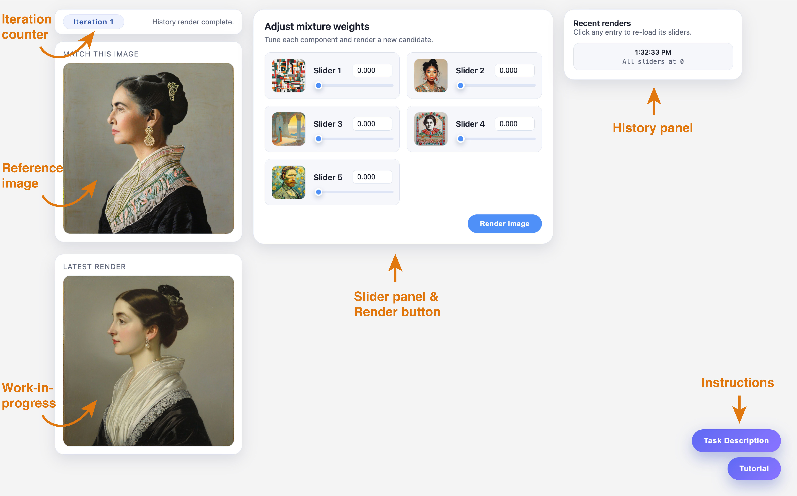
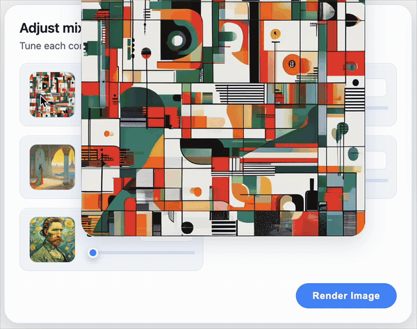
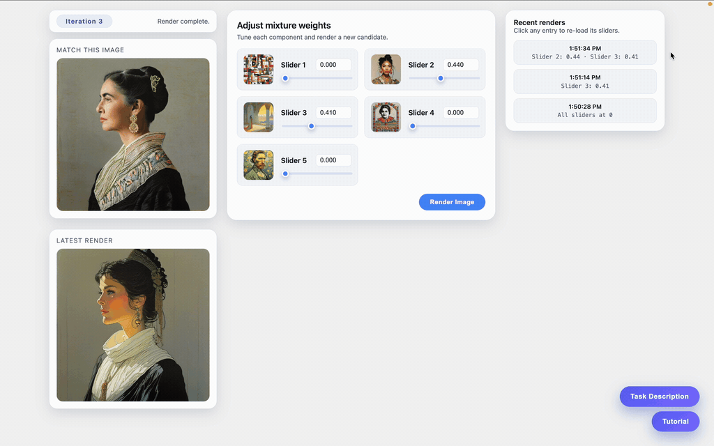

1. Interface Overview
The interface allows you to generate images by adjusting a set of mixture weights and comparing the result to a reference image.

- At the top left, a counter shows the current iteration number. You may generate up to 20 iterations.
- On the left, you will see the reference image labeled “Match This Image”. This is the image you should aim to match in overall visual appearance and style. The Latest Render panel below displays your current work-in-progress image.
- In the center, you will find a set of sliders, each corresponding to a different visual component. The thumbnail for each slider previews that component in isolation (hover to zoom in).
- Below the sliders, the Render Image button generates a new image based on the current slider settings.
- On the right, the Recent Renders panel displays your previous renders and allows you to revisit earlier slider configurations.
- In the bottom-right corner, the task description and this interface tutorial are available at any time.
2. Slider Manipulation and Rendering
Each slider controls the contribution of one visual component to the generated image.
- Use the thumbnail previews to view each slider's effect in isolation (hover to zoom in).
- Adjust a slider by dragging it left or right, or by entering a numeric value directly.
- Higher values increase the influence of that component, while lower values reduce it.
- You may adjust one or multiple sliders at a time.
- After adjusting the sliders, click Render Image to generate a new candidate image.
- The generated image will appear in the Latest Render panel.
You may generate up to 20 iterations while exploring different combinations.

3. History and Re-loading Previous Renders
The Recent Renders panel keeps track of your past renders.
- Each entry shows the time and a brief summary of the slider settings.
- Clicking an entry will restore the sliders to the values used for that render and display the corresponding image as the current work-in-progress in the Latest Render panel.
- This allows you to compare different attempts, revisit promising configurations, or refine a previous result.
The history panel is intended to support exploration and iteration.

4. Instructions
The task description and this interface tutorial are available at any time.
To access them, click the buttons located in the bottom-right corner of the interface.